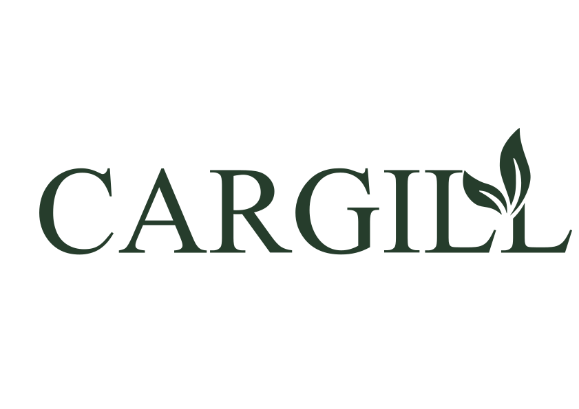
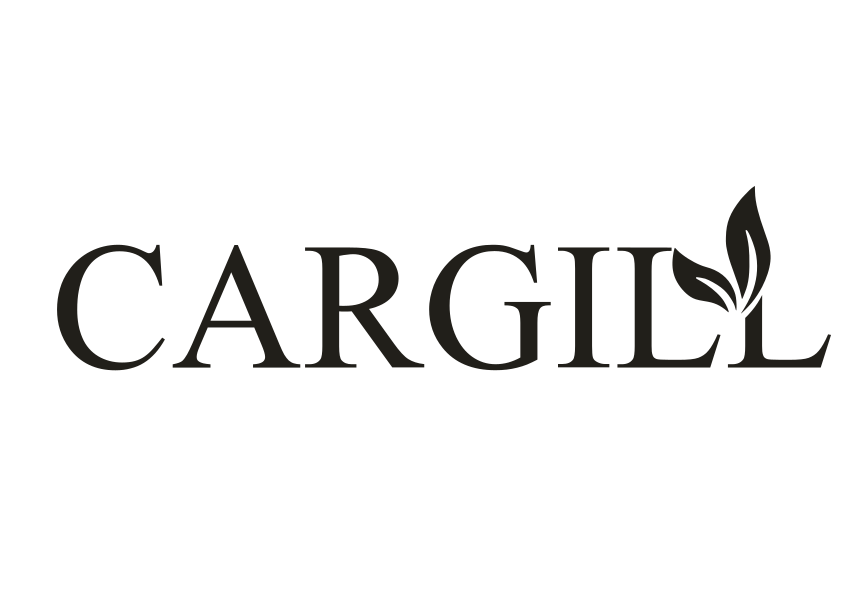
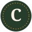

نفس اللوجو المُعتمد، بدون أي تعديل في الحروف أو النسب — الفرق إننا دلوقتي بنستخدم ملفات ألوان حقيقية بدل فلاتر CSS، ومحددين بدقة إمتى وإزاي يُستخدم.
في مراجعة الـ Audit اتقال إن نسخ الألوان كانت CSS filter بيتطبق على نفس الملف الأسود — ده مش نظام لوجو حقيقي. دلوقتي بقى عندك 3 ملفات SVG منفصلة بلون حقيقي مضبوط جوه الملف نفسه (مش فلتر بصري)، جاهزين للاستخدام في أي مكان: مطبوعات، الموقع، أو مستندات رسمية.
ده كل الاستخدامات المسموحة. مفيش نسخة رابعة أو لون خامس — أي احتياج للون تاني معناه لازم نرجع نناقشه، مش نضيفه على طول.



وحدة القياس = ارتفاع حرف الـ "C" الأول في اللوجو (نسميها وحدة X). لازم فراغ لا يقل عن X من كل الجهات الأربعة — من غير نص، لوجو تاني، أو حافة تصميم.
القيمة دي تقريبية بناءً على تناسب الحروف — قبل اعتمادها في مطبوعة رسمية، لازم تتقاس بدقة من الملف الأصلي في Illustrator/Figma (قياس نقاط الرسم مباشرة).
الحروف فيها تفاصيل رفيعة (خصوصًا تقاطعات الـ z والـ g) — تحت الحد ده هتبدأ تتلخبط أو تختفي في الطباعة الصغيرة.
تحت 55px رقمي أو 25مم طباعة، استبدل باللوجو بالنسخة المختصرة (Icon/Monogram) بدل ما تصغّر الكلمة الكاملة.
ممنوع وضع اللوجو مباشرة على صورة بدون طبقة تعتيم — التباين مش مضمون.
تمطيط أو ضغط اللوجو أفقيًا/رأسيًا
تدوير اللوجو بأي زاوية
إضافة ظل أو تأثيرات 3D
استخدام أي لون خارج الـ 3 نسخ المعتمدة
إعادة كتابة الاسم بخط عادي بدل استخدام الملف الأصلي
تقليل الشفافية أو استخدامه كـ Watermark خلف نص
الملف الأصلي اللي رفعته Wordmark بس (الاسم كامل) — مفيش رمز/أيقونة منفصلة تتحط في فافيكون أو أيقونة تطبيق موبايل. مينفعش نصغّر الكلمة الكاملة لحجم 32×32 بكسل، هتبقى غير مقروءة تمامًا.

| الصيغة | الاستخدام | ملاحظة |
|---|---|---|
| SVG | الملف الرئيسي — موقع، أي استخدام رقمي متغير الحجم | الأصل الوحيد اللي المفروض تتعدل منه أي نسخة تانية |
| PNG (transparent) | عروض تقديمية، مستندات Word/PowerPoint | Export بـ 3x resolution كحد أدنى |
| PDF (vector) | مطبوعات: فواتير، ورق رسمي، بروشورات | لازم يتضمن الألوان بصيغة CMYK مش RGB |
| ICO | Favicon للموقع | مبني على مقترح المونوجرام مش الـ Wordmark |
قيم تحويل تقريبية من الـ Hex الأصلي — أي مطبعة حقيقية لازم تعمل Proof فعلي قبل طباعة كمية كبيرة، لأن التحويل بيختلف شوية حسب نوع الورق والحبر.
| اللون | Hex | CMYK تقريبي |
|---|---|---|
| Deep Grove | #263D2C | C38 M0 Y28 K76 |
| Ink / Black | #211F1A | C0 M5 Y21 K87 |
| Sun Citrus | #E2932E | C0 M35 Y80 K11 |